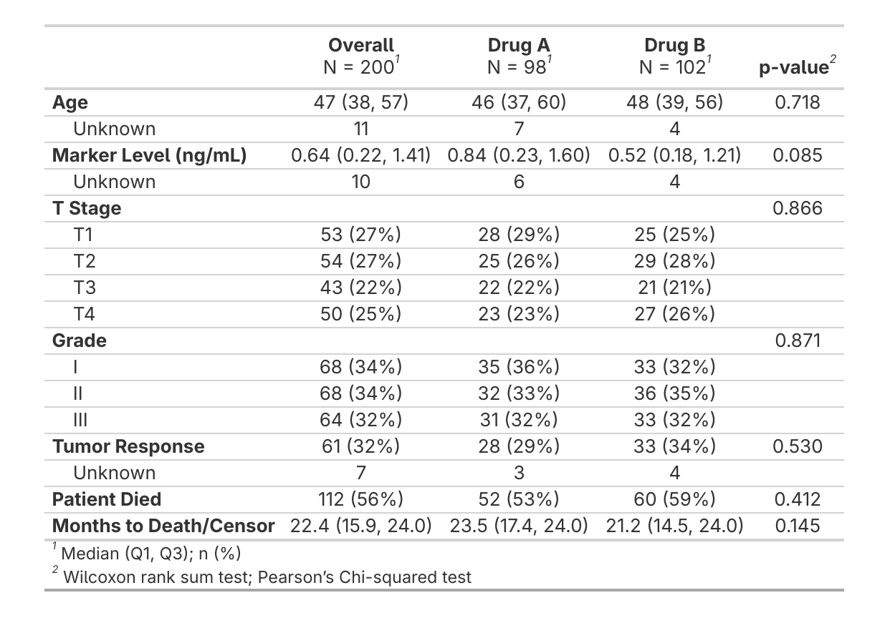

All examples in this vignette use the JAMA compact theme via
use_jama_theme(). Seevignette("themes")to set this up.
The extras() Function
If you’ve worked with gtsummary before, you’re
familiar with the typical workflow of building summary tables: creating
a base table with tbl_summary(), then progressively adding
features like overall columns, p-values, and formatting tweaks. While
gtsummary’s modular approach provides flexibility, the
same sequence of functions appears repeatedly in analysis scripts.
extras() consolidates the most common
gtsummary formatting steps into one call: bold labels, a
clean header, an overall column, p-values, and missing value
cleanup.
|
Standard gtsummary
|
With sumExtras
|

Customizing Output
You can control which features are applied:
# Without p-values
trial |>
tbl_summary(by = trt) |>
extras(pval = FALSE)|
Overall N = 2001 |
Drug A N = 981 |
Drug B N = 1021 |
|
|---|---|---|---|
| Age | 47 (38, 57) | 46 (37, 60) | 48 (39, 56) |
| Unknown | 11 | 7 | 4 |
| Marker Level (ng/mL) | 0.64 (0.22, 1.41) | 0.84 (0.23, 1.60) | 0.52 (0.18, 1.21) |
| Unknown | 10 | 6 | 4 |
| T Stage | |||
| T1 | 53 (27%) | 28 (29%) | 25 (25%) |
| T2 | 54 (27%) | 25 (26%) | 29 (28%) |
| T3 | 43 (22%) | 22 (22%) | 21 (21%) |
| T4 | 50 (25%) | 23 (23%) | 27 (26%) |
| Grade | |||
| I | 68 (34%) | 35 (36%) | 33 (32%) |
| II | 68 (34%) | 32 (33%) | 36 (35%) |
| III | 64 (32%) | 31 (32%) | 33 (32%) |
| Tumor Response | 61 (32%) | 28 (29%) | 33 (34%) |
| Unknown | 7 | 3 | 4 |
| Patient Died | 112 (56%) | 52 (53%) | 60 (59%) |
| Months to Death/Censor | 22.4 (15.9, 24.0) | 23.5 (17.4, 24.0) | 21.2 (14.5, 24.0) |
| 1 Median (Q1, Q3); n (%) | |||
# Overall column last instead of first
trial |>
tbl_summary(by = trt) |>
extras(last = TRUE)|
Drug A N = 981 |
Drug B N = 1021 |
Overall N = 2001 |
p-value2 | |
|---|---|---|---|---|
| Age | 46 (37, 60) | 48 (39, 56) | 47 (38, 57) | 0.718 |
| Unknown | 7 | 4 | 11 | |
| Marker Level (ng/mL) | 0.84 (0.23, 1.60) | 0.52 (0.18, 1.21) | 0.64 (0.22, 1.41) | 0.085 |
| Unknown | 6 | 4 | 10 | |
| T Stage | 0.866 | |||
| T1 | 28 (29%) | 25 (25%) | 53 (27%) | |
| T2 | 25 (26%) | 29 (28%) | 54 (27%) | |
| T3 | 22 (22%) | 21 (21%) | 43 (22%) | |
| T4 | 23 (23%) | 27 (26%) | 50 (25%) | |
| Grade | 0.871 | |||
| I | 35 (36%) | 33 (32%) | 68 (34%) | |
| II | 32 (33%) | 36 (35%) | 68 (34%) | |
| III | 31 (32%) | 33 (32%) | 64 (32%) | |
| Tumor Response | 28 (29%) | 33 (34%) | 61 (32%) | 0.530 |
| Unknown | 3 | 4 | 7 | |
| Patient Died | 52 (53%) | 60 (59%) | 112 (56%) | 0.412 |
| Months to Death/Censor | 23.5 (17.4, 24.0) | 21.2 (14.5, 24.0) | 22.4 (15.9, 24.0) | 0.145 |
| 1 Median (Q1, Q3); n (%) | ||||
| 2 Wilcoxon rank sum test; Pearson’s Chi-squared test | ||||
# Custom header text
trial |>
tbl_summary(by = trt) |>
extras(header = "Variable")| Variable |
Overall N = 2001 |
Drug A N = 981 |
Drug B N = 1021 |
p-value2 |
|---|---|---|---|---|
| Age | 47 (38, 57) | 46 (37, 60) | 48 (39, 56) | 0.718 |
| Unknown | 11 | 7 | 4 | |
| Marker Level (ng/mL) | 0.64 (0.22, 1.41) | 0.84 (0.23, 1.60) | 0.52 (0.18, 1.21) | 0.085 |
| Unknown | 10 | 6 | 4 | |
| T Stage | 0.866 | |||
| T1 | 53 (27%) | 28 (29%) | 25 (25%) | |
| T2 | 54 (27%) | 25 (26%) | 29 (28%) | |
| T3 | 43 (22%) | 22 (22%) | 21 (21%) | |
| T4 | 50 (25%) | 23 (23%) | 27 (26%) | |
| Grade | 0.871 | |||
| I | 68 (34%) | 35 (36%) | 33 (32%) | |
| II | 68 (34%) | 32 (33%) | 36 (35%) | |
| III | 64 (32%) | 31 (32%) | 33 (32%) | |
| Tumor Response | 61 (32%) | 28 (29%) | 33 (34%) | 0.530 |
| Unknown | 7 | 3 | 4 | |
| Patient Died | 112 (56%) | 52 (53%) | 60 (59%) | 0.412 |
| Months to Death/Censor | 22.4 (15.9, 24.0) | 23.5 (17.4, 24.0) | 21.2 (14.5, 24.0) | 0.145 |
| 1 Median (Q1, Q3); n (%) | ||||
| 2 Wilcoxon rank sum test; Pearson’s Chi-squared test | ||||
Or pass arguments as a list for reuse across tables:
my_args <- list(pval = TRUE, overall = TRUE, last = TRUE)
trial |>
select(age, grade, stage, trt) |>
tbl_summary(by = trt) |>
extras(.args = my_args)|
Drug A N = 981 |
Drug B N = 1021 |
Overall N = 2001 |
p-value2 | |
|---|---|---|---|---|
| Age | 46 (37, 60) | 48 (39, 56) | 47 (38, 57) | 0.718 |
| Unknown | 7 | 4 | 11 | |
| Grade | 0.871 | |||
| I | 35 (36%) | 33 (32%) | 68 (34%) | |
| II | 32 (33%) | 36 (35%) | 68 (34%) | |
| III | 31 (32%) | 33 (32%) | 64 (32%) | |
| T Stage | 0.866 | |||
| T1 | 28 (29%) | 25 (25%) | 53 (27%) | |
| T2 | 25 (26%) | 29 (28%) | 54 (27%) | |
| T3 | 22 (22%) | 21 (21%) | 43 (22%) | |
| T4 | 23 (23%) | 27 (26%) | 50 (25%) | |
| 1 Median (Q1, Q3); n (%) | ||||
| 2 Wilcoxon rank sum test; Pearson’s Chi-squared test | ||||
On non-stratified tables, extras() skips
add_overall() and add_p() and applies only the
formatting that makes sense. It works the same way with
tbl_regression() — bold labels, bold significant p-values
(from the model), clean header, and missing value cleanup are applied
automatically while irrelevant options are silently ignored. It never
breaks your pipeline.
# Regression tables work too
glm(response ~ age + grade, data = trial, family = binomial) |>
tbl_regression(exponentiate = TRUE) |>
extras()| OR | 95% CI | p-value | |
|---|---|---|---|
| Age | 1.02 | 1.00, 1.04 | 0.10 |
| Grade | |||
| I | — | — | |
| II | 0.85 | 0.39, 1.85 | 0.7 |
| III | 1.01 | 0.47, 2.16 | >0.9 |
| Abbreviations: CI = Confidence Interval, OR = Odds Ratio | |||
For merged tables, call extras() on each sub-table
before merging. All formatting (bold labels, p-values,
missing symbols) carries through tbl_merge(), so there’s no
need to call extras() again after:
t1 <- trial |>
tbl_summary(by = trt, include = c(age, grade)) |>
extras()
t2 <- trial |>
tbl_summary(by = trt, include = c(marker, stage)) |>
extras()
tbl_merge(list(t1, t2), tab_spanner = c("**Set A**", "**Set B**"))Cleaning Missing Values
clean_table() standardizes missing or zero-count
representations ("0 (NA%)", "NA (NA)",
"NA, NA", etc.) to "---". It runs
automatically inside extras(), but you can also use it on
its own. The symbol parameter controls the replacement text
(default "---"). You can also pass symbol
through extras().
demo_trial <- trial |>
mutate(
age = if_else(trt == "Drug B", 0, age),
marker = if_else(trt == "Drug A", NA, marker)
) |>
select(trt, age, marker)Without cleaning
demo_trial |>
tbl_summary(by = trt)With clean_table()
demo_trial |>
tbl_summary(by = trt) |>
clean_table()| Characteristic |
Drug A N = 981 |
Drug B N = 1021 |
|---|---|---|
| age | 46 (37, 60) | 0 (0, 0) |
| Unknown | 7 | 0 |
| marker | NA (NA, NA) | 0.52 (0.18, 1.21) |
| Unknown | 98 | 4 |
| 1 Median (Q1, Q3) | ||
| Characteristic |
Drug A N = 981 |
Drug B N = 1021 |
|---|---|---|
| age | 46 (37, 60) | — |
| Unknown | 7 | 0 |
| marker | — | 0.52 (0.18, 1.21) |
| Unknown | 98 | 4 |
| 1 Median (Q1, Q3) | ||
Automatic Labeling
add_auto_labels() applies human-readable variable labels
from a dictionary. Manual labels set in tbl_summary()
always take priority.
dictionary <- tibble::tribble(
~variable, ~description,
"trt", "Chemotherapy Treatment",
"age", "Age at Enrollment (years)",
"marker", "Marker Level (ng/mL)",
"stage", "T Stage",
"grade", "Tumor Grade"
)
trial |>
tbl_summary(by = trt, include = c(age, grade, marker)) |>
add_auto_labels(dictionary = dictionary) |>
extras()|
Overall N = 2001 |
Drug A N = 981 |
Drug B N = 1021 |
p-value2 | |
|---|---|---|---|---|
| Age | 47 (38, 57) | 46 (37, 60) | 48 (39, 56) | 0.718 |
| Unknown | 11 | 7 | 4 | |
| Grade | 0.871 | |||
| I | 68 (34%) | 35 (36%) | 33 (32%) | |
| II | 68 (34%) | 32 (33%) | 36 (35%) | |
| III | 64 (32%) | 31 (32%) | 33 (32%) | |
| Marker Level (ng/mL) | 0.64 (0.22, 1.41) | 0.84 (0.23, 1.60) | 0.52 (0.18, 1.21) | 0.085 |
| Unknown | 10 | 6 | 4 | |
| 1 Median (Q1, Q3); n (%) | ||||
| 2 Wilcoxon rank sum test; Pearson’s Chi-squared test | ||||
For more on label priority, pre-labeled data, and auto-discovery, see
vignette("labeling").
Pipeline Order
When combining with group headers and styling, order matters:
tbl_summary(by = ...) |>
extras() |> # always first
add_variable_group_header() |> # after extras()
add_group_styling() |> # format group headers
add_group_colors() # must be last (converts to gt)add_variable_group_header() must come after
extras(), and add_group_colors() must be last
since it converts the table to gt.
Other Vignettes
-
vignette("labeling")– dictionary-based labeling -
vignette("themes")– JAMA compact themes for gtsummary and gt for gtsummary and gt tables -
vignette("styling")– group headers, formatting, and background colors -
vignette("options")– .Rprofile options for automatic labeling